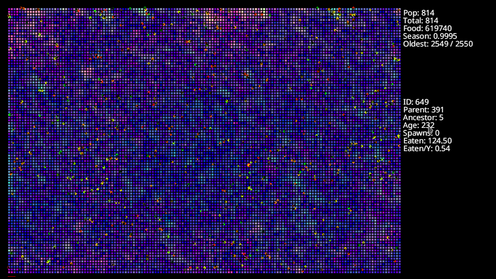
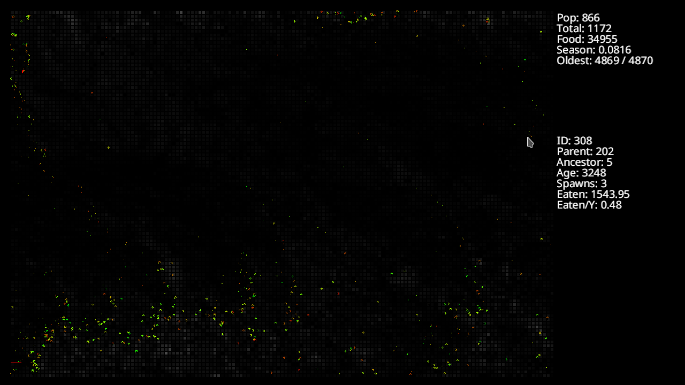
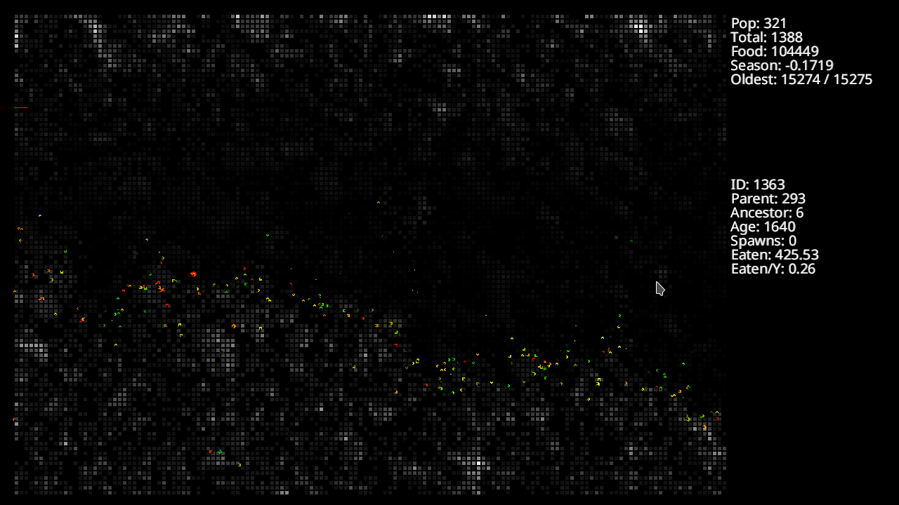
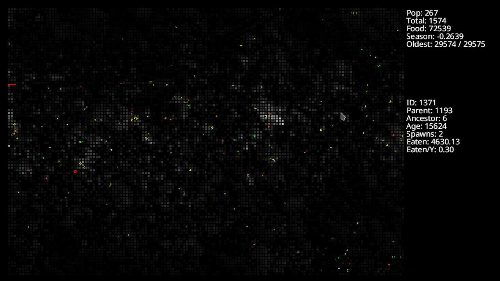

A Bug's Life
Started December 13, 2016
This is a simple artificial life simulator written in Rust. A grid of coloured squares represent the ground, with the shade representing the amount of food on that tile of ground. A simulated seasons mechanism regenerates food on the tiles at different rates to encourage the creatures to move towards tiles with more food.
Circular creatures roam the area eating whatever is on the tile below them. Their size is determined by how much they eat, minus a metabolizing amount for each timestep they are alive. Their movements are controlled by a simple feed-foward neural network of a hardcoded size (2 hidden layers with 10 to 20 neurons each). The network can make them either move forward or stop, or turn left or turn right. If the creatures are large enough, they will have a random chance of budding a new creature from themselves, which inherits a slightly changed version of the parent's neural network weights. Creatures that fall below a certain size will die.
The effect looks like bugs scurrying about, in search of food. It is possible, after many generations, to get creatures that show a strong tendency to hang around tiles with lots of food, and scatter in search of food when those tiles run out of food.
Running
You will need Rust and Cargo installed. If using debian, you can run:
sudo apt-get install rustc cargo
cd abugslife
cargo run --release
You can edit the World::new function in src/world.rs to change which previously saved creatures to initialize the system with, or switch the commented code around to randomly generate new creatures from scratch.
Screenshots
   
Get the Source
https://github.com/transistorfet/abugslifeOr clone with:
git clone git@github.com:transistorfet/abugslife